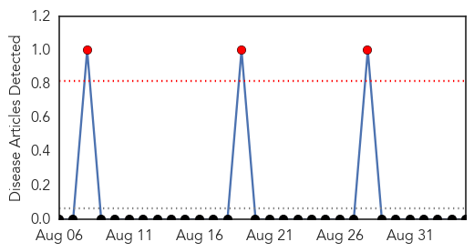
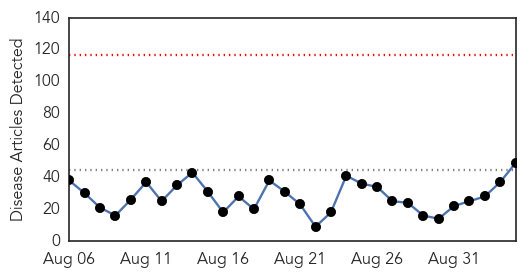
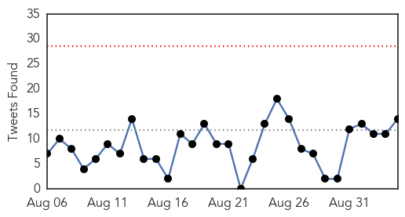
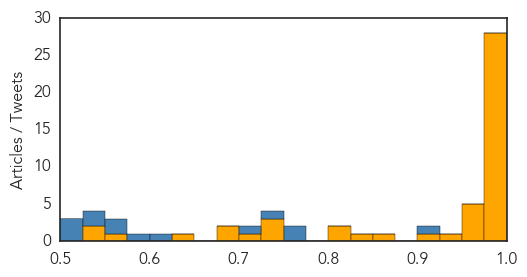

Yellow Fever
30-Day Web Trend
3 alerts, 0 warnings

30-Day Twitter Trend
0 alerts, 0 warnings

Article Locations

Article Confidences

Top Articles:
-
No articles found for Sep 04, 2015
Top Tweets:
-
No tweets found for Sep 04, 2015
Ebola
30-Day Web Trend
0 alerts, 0 warnings

30-Day Twitter Trend
0 alerts, 0 warnings

Article Locations

Article Confidences
Top Articles:
- 1.000
- Q&A: Ahead of Seoul-Hosted GHSA Meeting, CDC Director Talks Ebola
- 1.000
- Ebola back in Africa, yet again – Village in Sierra Leone quarantined after the death of one woman
- 1.000
- Liberia: Ebola-Free, for a Second Time
- 1.000
- First Case of Ebola In Ethiopia Reported (Hara Ethiopia)
- 1.000
- Rapid test, vaccine may end Ebola outbreak
- 1.000
- 10 Frightening Facts About Ebola
- 1.000
- WHO declares Liberia free from Ebola -- again
- 1.000
- Texas Healthcare Worker Tests Positive for Ebola
- 0.999
- 200 Sierra Leone Residents to Receive Vaccination
- 0.999
- Liberia declared free of Ebola spread -- again: WHO
- 0.999
- WHO Declares Liberia Ebola-Free For The Second Time Around : LIFE : Tech Times
- 0.999
- Ithaca doctor talks about helping fight Ebola virus
- 0.999
- Ebola Spread Slows In Guinea But 'Much Remains To Be Done'
- 0.999
- Liberia Declared Ebola-Free Again
- 0.999
- W.H.O Declares Liberia Ebola-Free
- 0.998
- Liberia receives 2nd Ebola-freed certificate
- 0.998
- Ebola doctor calls for fatal flaws in Sierra Leone health system to be addressed
- 0.998
- Village of 1,000 quarantined after Ebola death in Sierra Leone - Sierra Leone
- 0.997
- Ghana Health Services still leaving no stone unturned with strategies to prevent Ebola
- 0.996
- Sierra Leone village in quarantine after woman dies of Ebola
- 0.996
- Lessons learned from Ebola could help in future cases
- 0.996
- Review cites problems at Texas hospital during Ebola crisis
- 0.995
- Lessons Learned From Ebola Could Help in Future Cases
- 0.995
- Review cites problems at Texas hospital during Ebola crisis
- 0.994
- Review cites problems at Texas hospital during Ebola crisis
- 0.986
- Texas Hospital Wasn’t Prepared for Ebola Crisis
- 0.976
- Keeping families connected during Ebola quarantine
- 0.976
- Failures of Dallas hospital during Ebola crisis detailed in new report
- 0.970
- WHO Announces Liberia Ebola-Free For Second Time This Year
- 0.964
- Mass. Doctor Who Survived Ebola Continues Fight Against Disease « CBS Boston
- 0.956
- Ebola: S/Leone quarantines whole village
- 0.952
- WHO Salutes Liberia For Halting Ebola Transmission
- 0.951
- Liberia declared Ebola-free
- 0.939
- WHO declares Liberia Ebola-free again
- 0.900
- The forest detectives: Searching for proof about forests and disease
- 0.851
- As Clinical RM hands over refurbished Blood Bank …94 Convalescent ebola Plasma available for administration « Awoko Newspaper
- 0.838
- Independent Review Says Texas Health Presbyterian Was Not Prepared For Ebola
- 0.810
- Biotech company might help Saudi Arabia with MERS
- 0.803
- From The KERA Newsroom: Ebola Missteps Explained; The Libre Initiative Mission
- 0.744
- President Koroma hosts World Medicine Summit chief
- 0.743
- President Koroma receives credentials from three new ambassadors
- 0.740
- President Ernest Koroma hosts World Medicine Summit chief
- 0.716
- Ebola UK school panic: Parents threaten to remove kids over teachers’ Kenya trip
- 0.698
- Princess of Asturias Award for religious order dedicated to Ebola patients in Africa
- 0.690
- This Neighbourhood Watch Group is determined to keep Ebola out
- 0.650
- Misdiagnoses are getting a closer look
- 0.561
- SLAJ disowns pseudo-media group
- 0.541
- More heartbreak for Ebola survivor after baby boy dies
- 0.531
- Playhouse Foundation hosts Post-Ebola Roundtable : The implications for Kono District
Top Tweets:
- 0.902
- Sierra Leone Village Quarantined After Ebola Death - TIME http://t.co/TCxnPRDter ebola EVD
- 0.772
- RT: Active Ebola transmission continues in Guinea & Sierra Leone but reported cases at lowest point in a year. @CDCMMWR htt…
- 0.755
- Mass. Doctor Who Survived Ebola Continues Fight Against Disease - CBS Local http://t.co/TtRenSuweV ebola EVD
- 0.726
- RT: @WHO today starts an Ebola vaccination of hundreds of people in northern SierraLeone where almost 1000 people have been…
- 0.700
- Sierra Leone News : Gambia Assures Continued Solidarity in Fighting Ebola - Awareness Times http://t.co/o0a86TIgtQ ebola EVD
- 0.608
- Review Cites Problems at Texas Hospital During Ebola Crisis - NBC 5 Dallas-Fort Worth http://t.co/GdwSedW24Y ebola EVD
- 0.590
- Review cites problems at Texas hospital during Ebola crisis - Fox News http://t.co/UfLJKc6V56 ebola EVD
- 0.558
- Review Cites Problems at Texas Hospital During Ebola Crisis - ABC News http://t.co/25DuPgH4PA ebola EVD
- 0.552
- 50 people quarantined in the northern district of Kambia Sierra Leone after recent death of Ebola patient http://t.co/4ERVpVWxa3
- 0.537
- LIBERIA: "We Are Not Harmful" Ebola Survivor Tells Public - Global News Network http://t.co/XvG8u1FVqh ebola EVD
- 0.533
- Unfortunate headline but an important piece on how Ebola affects child health http://t.co/d7b3zaT8z7 Ebola
- 0.511
- More heartbreak for Ebola survivor after baby boy dies - U.S. News & World Report http://t.co/L4jH1AFHkp ebola EVD
- 0.509
- RT: A village of almost 1000 people in Sierra Leone has been sealed off after a woman died of Ebola. http://t.co/1WFs2pf1nY
- 0.504
- Elimination of Ebola Virus Transmission in Liberia — September 3 2015 Ebolafree http://t.co/HWz4jmlFy0